Examples
Worked Examples
This section contains worked examples, most of them with fully annotated Python code that you can use as reference.
Exploratory Data Analysis
Before starting any analysis, we first need to import a dataset, understand its variables, visualize it, and manipulate it systematically using tools like pandas, matplotlib, and seaborn. This might seem like a tedious step, but it’s a critical foundation that must precede any form of statistical modelling.
Data Modelling
Data modelling allows us to move beyond describing individual variables — instead, we use models to learn from data. At the core of this is understanding the relationship:
# General form of a predictive model
outcome = f(features) + errorWe begin with Exploratory Data Analysis tailored for modelling, and then proceed with three key approaches:
EDA for Modelling After importing and cleaning the data (using pandas), we start looking at summary statistics and plots that will be useful in framing our modelling approach
Testing for Differences in Means across samples: How do we know whether there is a statistically significant difference between two groups A and B? E.g., between those who took a drug versus those than a placebo? Or whether there is a difference in the percentage of people who approve of Donald Trump is lower than those who disapprove of him?
Fitting a Linear Regression Model To understand which features are associated with a numerical outcome Y, we use Linear Regression from
scikit-learn. We try to explain the effect that specific explanatory variables, X, have on YFitting a Binary Classification Model where the difference is that the outcome variable, Y, is binary (0/1). Again we want to use our model primarily for explanation, e.g., what is the effect of different explanatory variables X’s on e.g., the probability that someone with Covid-19 will die?
Exploratory Data Analysis
1. Import Data
Learning Objectives
Load external data from a .csv file into a data frame.
Describe what a data frame is.
Use indexing to subset specific portions of data frames.
Describe what a factor is.
Reorder and rename factors.
Format dates.
Overview
When working with Python, data importation is generally achieved using libraries like pandas, which provides powerful tools for data manipulation, including importing data from various file formats.
Importing CSV files: pandas.read_csv()
CSV files can be imported using the read_csv() function from the pandas library. This function is fast and user-friendly, allowing you to read flat data without complex configurations.
import pandas as pd
# Importing CSV file from a URL
url = "https://data.giss.nasa.gov/gistemp/tabledata_v4/NH.Ts+dSST.csv"
weather = pd.read_csv(url, skiprows=1, na_values="***")Options Used: * skiprows=1: This skips the first row, assuming the actual data starts from the second row. * na_values= "***" : This treats astriks’ as missing values, converting them to NaN.
To view the structure of the dataframe, you can use:
print(weather.info())
print(weather.head())Importing CSV files saved locally
To import a CSV file saved locally, simply provide the file path to the read_csv() function:
weather_local = pd.read_csv("path/to/your/localfile.csv")Need for speed: dask and vaex
For handling large datasets, libraries like dask and vaex can be used, which offer faster data processing capabilities compared to pandas.
import dask.dataframe as dd
weather_large = dd.read_csv("path/to/largefile.csv")Other data formats
Python offers several libraries for reading and writing various data formats:
- Excel files:
pandas.read_excel() - JSON:
jsonlibrary - Web APIs:
requestslibrary - Databases:
sqlite3 - Big Data:
pyspark
Never work directly on the raw data
In 2012 Cecilia Giménez, an 83-year-old widow and amateur painter, attempted to restore a century-old fresco of Jesus crowned with thorns in her local church in Borja, Spain. The restoration didn’t go very well, but, surprisingly, the botched restoration of Jesus fresco miraculously saved the Spanish Town.
As a most important rule, please do not work on the raw data; it’s unlikely you will have Cecilia Giménez’s good fortune to become (in)famous for your not-so-brilliant work.
Make sure you always work on a copy of your raw data. Use Python’s data manipulation libraries to clean and transform your data, and save the results to a new file, ensuring the original data remains intact.
weather_cleaned = weather.dropna() # Example of cleaning data
weather_cleaned.to_csv("cleaned_data.csv", index=False)Other Links
- For Big-Data Scientists, ‘Janitor Work’ Is Key Hurdle to Insights
- Data Wrangling with
pandas: Pandas Documentation - Big Data Processing with
daskandvaex: Dask Documentation, Vaex Documentation
2. Inspect Data
Overview
Once you have loaded your dataset into Python, it’s essential to inspect and understand the data. Typically, you want to know:
- The dimensions of the dataset (number of rows and columns).
- The types of variables (integer, string, boolean, etc.).
- The number of missing values.
- Summary statistics for numeric data.
Viewing Data
In Python, you can use pandas to view and inspect your data. The pandas library provides several functions to achieve this.
pandas.DataFrame.info() and pandas.DataFrame.describe()
These functions help you understand the structure and summary statistics of your data.
import pandas as pd
# Load data
gapminder = pd.read_csv("path/to/gapminder.csv")
# View the structure of the dataframe
print(gapminder.info())
# Summary statistics
print(gapminder.describe())Using info(): Provides the number of rows, columns, and data types of each column. Using describe() : Offers summary statistics for numeric columns, including count, mean, standard deviation, min, and max values.
Detailed Inspection
For a detailed inspection, you can use the pandas_profiling library, which provides an extensive report on your dataframe.
from pandas_profiling import ProfileReport
# Generate a report
profile = ProfileReport(gapminder)
profile.to_file("gapminder_report.html")Example Analysis on London Bikes Data
bikes = pd.read_csv("path/to/londonBikes.csv")
# Use pandas_profiling for a detailed report
bikes_profile = ProfileReport(bikes)
bikes_profile.to_file("london_bikes_report.html")Key Questions
using the London Bikes Data from above
- What kind of variable is date?
- date is typically a string or datetime variable. You can convert it using
pd.to_datetime().
bikes['date'] = pd.to_datetime(bikes['date']) - date is typically a string or datetime variable. You can convert it using
- What kind of variable is season?
- season is likely a categorical variable. You can convert it using
pd.Categorical().
bikes['season'] = pd.Categorical(bikes['season']) - season is likely a categorical variable. You can convert it using
- How often does it rain in London?
- Count the occurrences in the rain column.
rain_count = bikes['rain'].sum() print(f"It rains {rain_count} times in the dataset.") - What is the average annual temperature (in degrees C)?
- Calculate the mean of the temperature columns.
avg_temp = bikes[['max_temp', 'min_temp', 'avg_temp']].mean().mean() print(f"The average annual temperature is {avg_temp:.2f} degrees C.") - What is the maximum rainfall?
- Find the maximum value in the
rainfall_mmcolumn.
max_rainfall = bikes['rainfall_mm'].max() print(f"The maximum rainfall recorded is {max_rainfall} mm.") - Find the maximum value in the
3. Clean Data
Overview
When creating data files, it’s common to use variable names and formats that are human-readable but not ideal for computational processing. In Python, the pandas library can be used to clean and standardise variable names for easier manipulation.
Cleaning Variable Names with pandas
In Python, we can use pandas and custom code to read data and clean column names to make them more suitable for analysis.
import pandas as pd
# Load Excel file
roster = pd.read_excel("path/to/dirty_data.xlsx")
# Clean column names using pandas string methods
roster.columns = (
roster.columns
.str.strip() # Remove leading and trailing spaces
.str.lower() # Convert to lowercase
.str.replace(' ', '_') # Replace spaces with underscores
.str.replace('%', 'percent') # Replace '%' with 'percent'
.str.replace('[^a-zA-Z0-9_]', '', regex=True) # Remove special characters
)
# Inspect cleaned dataframe
print(roster.head())- The custom code directly modifies the column names using pandas string methods. It removes spaces, converts to lowercase, replaces spaces with underscores, and removes special characters using a regular expression.
- Regular Expression: [^a-zA-Z0-9_] is used to remove any character that is not alphanumeric or an underscore.
pandas.read_excel(): Used to read Excel files into a DataFrame.
Code Quality
According to Phil Karlton, there are only two hard things in Computer Science: cache invalidation and naming things. It’s crucial to write code that is not only functional but also maintainable and readable. Use meaningful names for variables and dataframes, and include comments to explain complex logic.
Other Links
4. Visualise Data
Learning Objectives
- Produce scatter plots, boxplots, and time series plots using matplotlib and seaborn.
- Set universal plot settings.
- Describe what faceting is and apply faceting using seaborn
- Modify the aesthetics of an existing plot (including axis labels and colour).
- Build complex and customised plots from data in a DataFrame.
Overview
“Visualization is a powerful tool for understanding data. You can often discover patterns, spot anomalies, and develop an intuition for the data just by looking at it.”
— Wes McKinney, creator of pandas
We will explore how to create insightful and aesthetically pleasing data visualisations using two powerful Python libraries: matplotlib and seaborn.
We will work through examples of various plot types - scatter plots, boxplots, and histograms - and learn to customise them for clarity and impact.
It may seem verbose and unwieldy, but the idea of building a plot on a layer-by-layer basis is very powerful.
- You begin a plot by defining the dataset you will use.
- Then, specify aesthetics, namely (x, y) coordinates, colour, size, etc.
- Finally, choose the geometric shape to represent your data, and add more layers like legends, labels, facets, etc.
For example, using the Gapminder dataset with data on life expectancy (life_exp), human development index (hdi_index), and GDP (gdp) for a number of countries, we can build a graph that shows the relationship between GDP and life expectancy.
As we said, first we define the dataset we are using
import pandas as pd
gapminder = pd.read_csv(r"filepath-to-your-dataset")The next thing is to map aesthetics. In our case, we will map gdpPercap to the x-axis, and lifeExp to the y-axis.
# Basic Plot Setup
plt.figure(figsize=(10, 6))
sns.scatterplot(data=gapminder, x='gdp', y='life_exp')
plt.title('Life Expectancy vs GDP')
plt.xlabel('GDP')
plt.ylabel('Life Expectancy')
plt.show()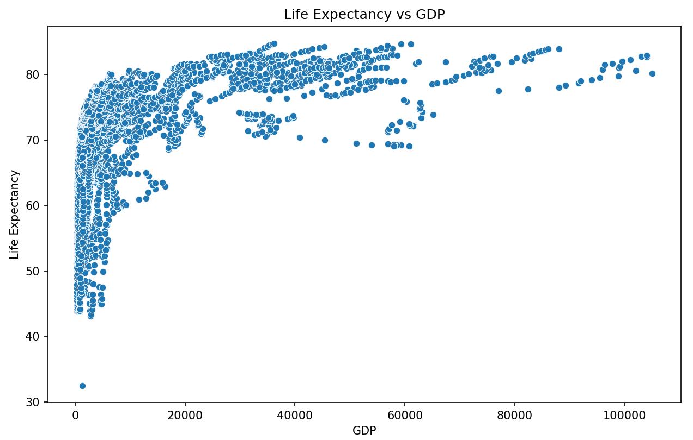
plt.figure(figsize=(10, 6)): Defines the size of the plot.sns.scatterplot(...): Uses Seaborn to draw a scatter plot from the gapminder dataset.plt.title(...),plt.xlabel(...),plt.ylabel(...): Add meaningful labels and a title to make the chart easy to understand.plt.show(): Renders the plot in your output window or notebook.
What if we wanted to colour the points by the continent each country is in? For this we will need to use the “continent” column from our gapminder dataset. Seaborn makes this easy using the hue parameter.
# Colored Scatter Plot by Continent
plt.figure(figsize=(10, 6)) # Set figure size
sns.scatterplot(data=gapminder, x='gdp', y='life_exp', hue='continent') # Color points by continent
plt.title('Life Expectancy vs GDP by Continent') # Updated title
plt.xlabel('GDP')
plt.ylabel('Life Expectancy')
plt.legend(title='Continent') # Add a legend with a title
plt.show()
hue='continent': Tells Seaborn to color the points based on the continent each country belongs to.plt.legend(...): Makes sure the legend is clear and labeled.
What if instead of a scatter plot we wanted to create a line plot? For this we need to:
- change the
sns.scatterplottosns.lineplot
# Colored Line Plot by Continent
plt.figure(figsize=(10, 6)) # Set figure size
sns.lineplot(data=gapminder, x='gdp', y='life_exp', hue='continent') # Color points by continent
plt.title('Life Expectancy vs GDP by Continent') # Updated title
plt.xlabel('GDP')
plt.ylabel('Life Expectancy')
plt.legend(title='Continent') # Add a legend with a title
plt.show()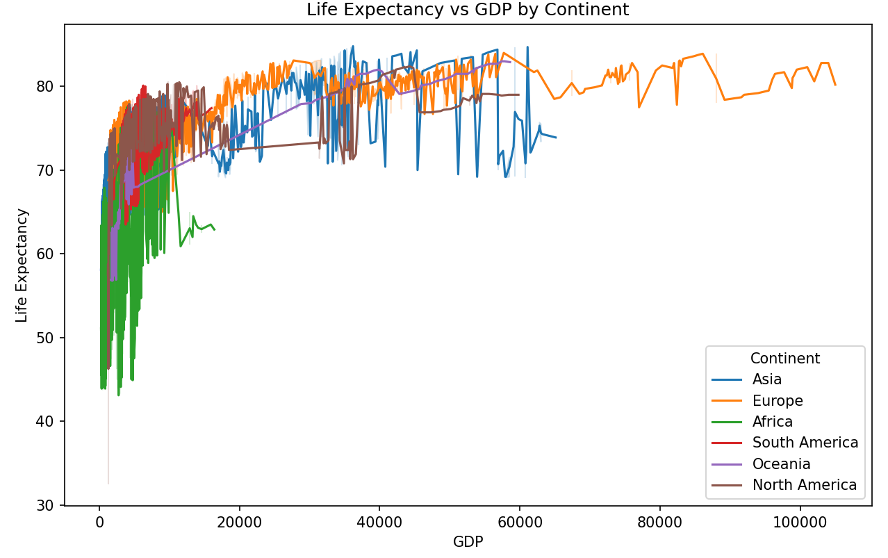
However, this is not a particularly useful plot, so let us go back to our scatter plot.
What if we wanted to have the size of each point correspond to the HDI index of the country? For this we will :
- add the
size='hdi_index'parameter in thescatterplot()function - add the
sizes=(20, 200)parameter in thescatterplot()function to specify the range of sizes of scatter points we want to use.
# going back to scatter plot but now the size of points coresspond to the population of the country
# Basic Plot Setup with size mapped to population
plt.figure(figsize=(10, 6))
sns.scatterplot(
data=gapminder,
x='gdp',
y='life_exp',
size='hdi_index', # map size to population
sizes=(20, 200), # scale point size (min, max)
)
plt.title('Life Expectancy vs GDP (Point Size = hdi_index)')
plt.xlabel('GDP')
plt.ylabel('Life Expectancy')
plt.legend(title='hdi_index', loc='upper left', bbox_to_anchor=(1, 1))
plt.tight_layout()
plt.show()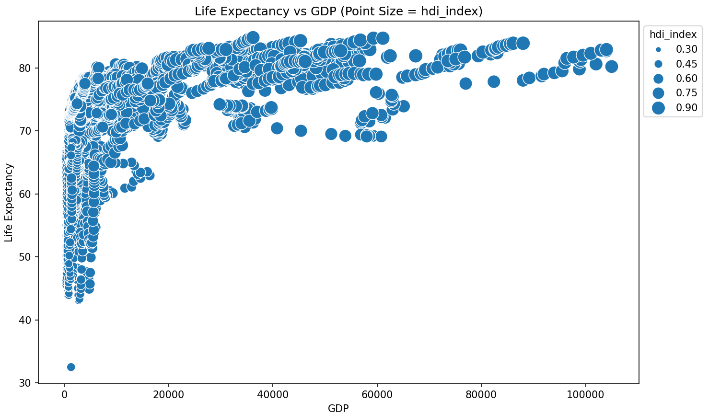 But the points above are overlapping with each other. We can set the alpha variable between 0 and 1 to specify how transparent each point will be. This will let us see all the points better.
# Adding Alpha
plt.figure(figsize=(10, 6))
sns.scatterplot(
data=gapminder,
x='gdp',
y='life_exp',
size='hdi_index', # map size to population
sizes=(20, 200), # scale point size (min, max)
alpha=0.4 # make points a bit transparent
)
plt.title('Life Expectancy vs GDP (Point Size = hdi_index)')
plt.xlabel('GDP')
plt.ylabel('Life Expectancy')
plt.legend(title='hdi_index', loc='upper left', bbox_to_anchor=(1, 1))
plt.tight_layout()
plt.show()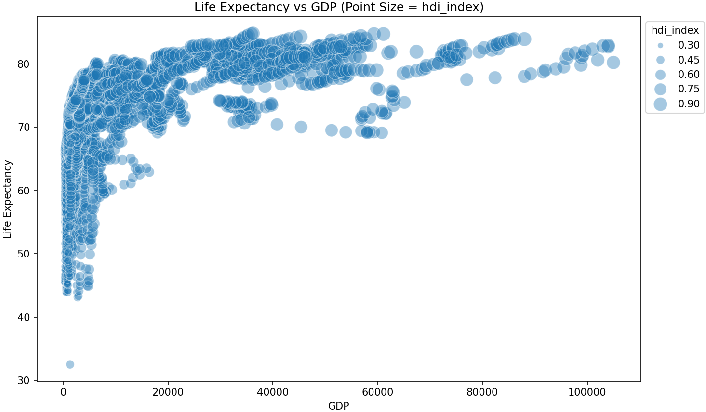
Our graph is still not very clear after adding the alpha this is because all the points are bunched up in only a small section of the graph. We can log the x-axis to make the points more spread out across the GDP axis.
# Logging the axis
plt.figure(figsize=(10, 6))
sns.scatterplot(
data=gapminder,
x='gdp',
y='life_exp',
size='hdi_index', # map size to population
sizes=(20, 200), # scale point size (min, max)
alpha=0.4 # make points a bit transparent
)
plt.title('Life Expectancy vs GDP (Point Size = hdi_index)')
plt.xlabel('GDP')
plt.ylabel('Life Expectancy')
plt.legend(title='hdi_index', loc='upper left', bbox_to_anchor=(1, 1))
plt.tight_layout()
plt.xscale('log')
plt.show()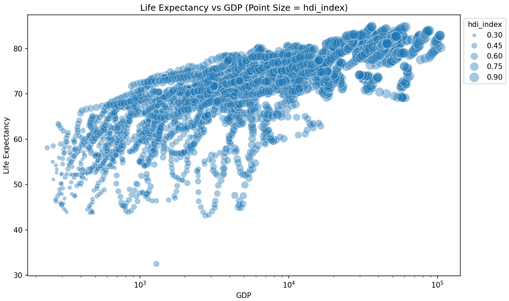 We will now add the colour by continent parameter back.
For this notice that we are splitting the legends’ code into 2 separate sections.
# Adding color by continent parameter back
plt.figure(figsize=(10, 6))
scatter = sns.scatterplot(
data=gapminder,
x='gdp',
y='life_exp',
size='hdi_index', # map size to population
sizes=(20, 200), # scale point size (min, max)
alpha=0.4, # make points a bit transparent
hue='continent'
)
plt.title('Life Expectancy vs GDP (Point Size = hdi_index)')
plt.xlabel('GDP per capita (USD)')
plt.ylabel('Life Expectancy (years)')
# Separate legends for hue and size
plt.legend(title='hdi_index', loc='upper left', bbox_to_anchor=(1, 1))
sns.move_legend(scatter, title='Continent', loc='upper left', bbox_to_anchor=(0.7, 0.65))
plt.tight_layout # making sure the legends are in the frame
plt.xscale('log')
plt.show()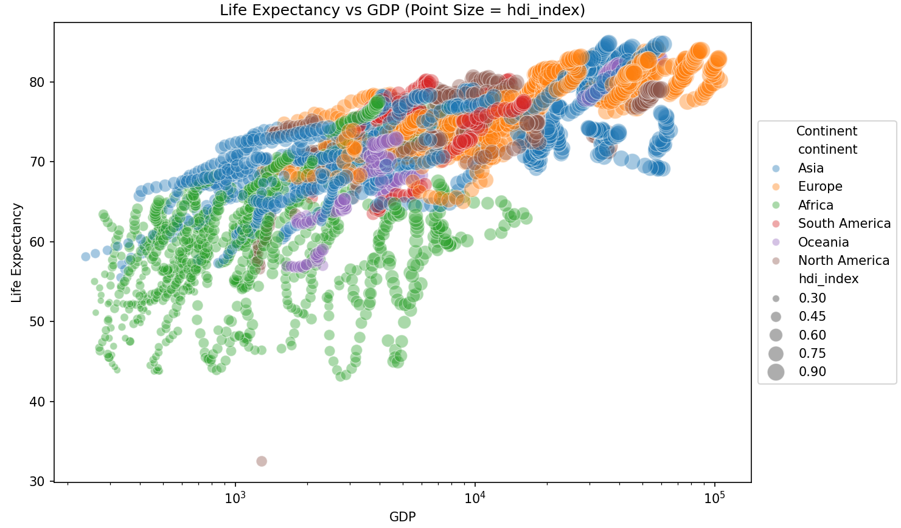
Layers
Once you define your data and aesthetics (such as (x, y) coordinates, colour, size, etc.), you can add more layers to modify and enhance your plots.
- Geometric Objects: These are the graphical objects to be drawn, such as histograms, boxplots, density plots, etc.
- Statistics: These can be applied to your data, like calculating density or fitting a regression line.
- Position Adjustments: These modify how elements are placed, such as jittering points or stacking bars.
Example: Creating a Base plot - a histogram
# Histogram with Position Adjustments
plt.figure(figsize=(10, 6))
sns.histplot(data=gapminder, x='life_exp', hue='continent', element='step', fill=True, alpha=0.3)
plt.title('Histogram of Life Expectancy by Continent')
plt.xlabel('Life Expectancy')
plt.ylabel('Frequency')
plt.show()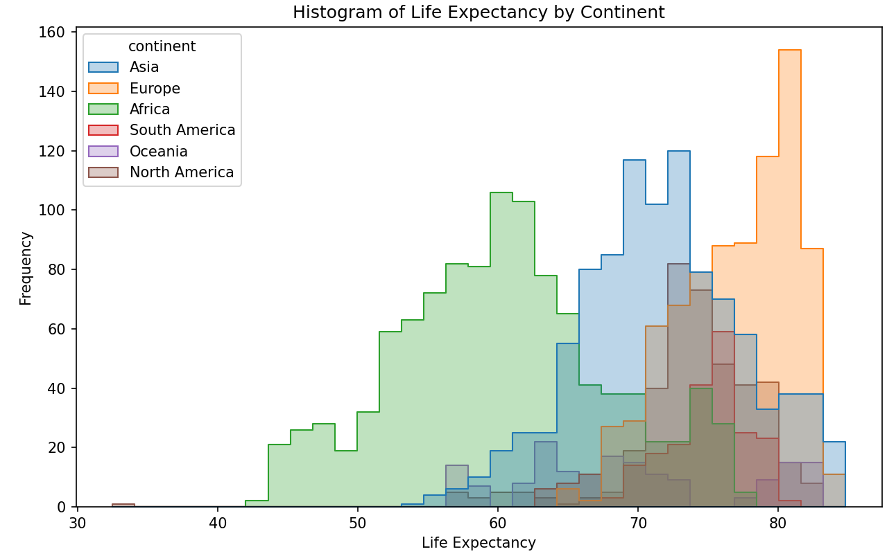
the “element” attribute can be one of “step”, “poly” or “bars” depending of what is needed. Try it out yourself.
We will now plot a density plot, a smoothed version of a histogram using geom_density; its default position is identity and both plots are equivalent.
- A histogram displays the frequency of data within bins, while a density plot represents the probability density function of the data, providing a smoothed continuous curve.
- To convert a histogram to a density plot, you typically use
sns.kdeplot, which computes and plots the kernel density estimate.
In our code below, the kdeplot function is used to create a density plot, and the common_norm=False ensures that the densities for each continent are normalized separately, allowing for a fair comparison of the distribution shapes without being influenced by the differing sizes of the groups.
# filled Density Plot
plt.figure(figsize=(10, 6))
sns.kdeplot(data=gapminder, x='life_exp', hue='continent', fill=True, common_norm=False, alpha=0.3)
plt.title('Density Plot of Life Expectancy by Continent')
plt.xlabel('Life Expectancy')
plt.ylabel('Density')
plt.show()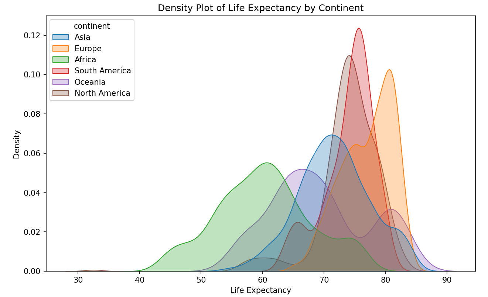
The “Multiple Parameter” The multiple Parameter can be set to any of these values:
layer- Overlays categories, allowing overlap.stack- Stacks categories cumulatively.fill- Stacks and scales categories to equal height.dodge- Positions categories side by side.
e.g. using the dodge version:
plt.figure(figsize=(10, 6))
sns.histplot(data=gapminder, x='life_exp', hue='continent', multiple='dodge', alpha=0.3)
plt.title('Life Expectancy Distribution by Continent')
plt.xlabel('Life Expectancy')
plt.ylabel('Frequency')
plt.show()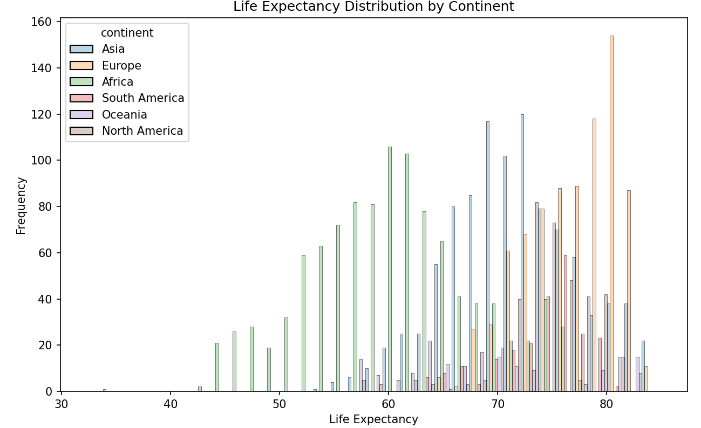
Faucetting
Facetting is a powerful technique in data visualisation that allows you to split one plot into multiple plots based on a factor included in the dataset. Python’s seaborn library provides this functionality.
In the Gapminder scatterplot example, we can use faceting to produce one scatter plot for each continent separately, using FacetGrid.
Define the Core Scatter Plot
First, let’s define the core scatter plot of life expectancy vs GDP and store it in an object for easy reuse:
# Base graph
plt.figure(figsize=(10, 6))
sns.scatterplot(data=gapminder, x='gdp', y='life_exp', hue='continent', alpha=0.5)
plt.xscale('log')
plt.title('Life Expectancy vs GDP per capita, 1998-2002')
plt.xlabel('GDP per capita')
plt.ylabel('Life Expectancy')
plt.show()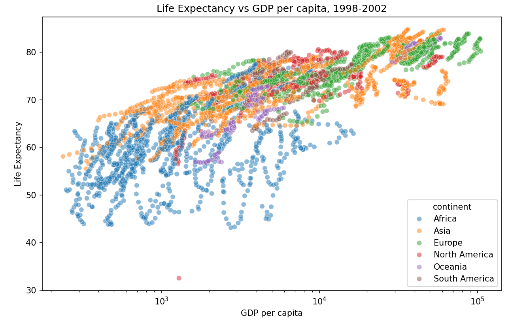
Now, let’s add a new layer to our base plot using FacetGrid to facet by continent:
# Ensure 'continent' is treated as a categorical variable
gapminder['continent'] = gapminder['continent'].astype('category')
# Facet the scatter plot by continent with hue
g = sns.FacetGrid(gapminder, col='continent', col_wrap=3, height=4)
g.map_dataframe(sns.scatterplot, x='gdp', y='life_exp', hue='continent', alpha=0.5)
g.set_titles("{col_name}")
g.set_axis_labels('GDP per capita', 'Life Expectancy')
g.add_legend()
plt.show()g.map_dataframe(...): Maps the sns.scatterplot function to each facet, passing the data explicitly and ensuring thathue='continent'colours the points appropriately in each facet.
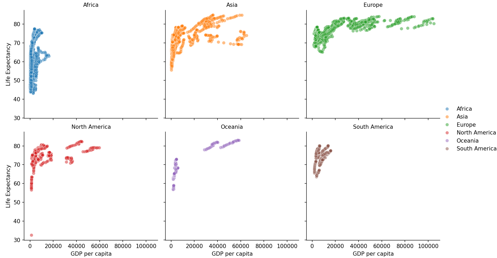
FacetGrid: This is used to create a grid of plots, allowing you to facet by a specified variable (continent in this case).col_wrap: This parameter controls the number of columns in the facet grid, making it adaptable to different screen sizes.map: This method maps a plotting function (sns.scatterplot) to each facet.
Finally, if you want to create a boxplot of life expectancy by continent instead of a scatter plot, you can use similar aesthetics with Python libraries like matplotlib and seaborn. The key difference is the type of plot you choose to represent your data.
plt.figure(figsize=(10, 6))
sns.boxplot(data=gapminder, x='continent', y='life_exp', hue='continent')
# Add labels and title
plt.title("Life Expectancy among the continents, 1952-2007")
plt.xlabel(" ") # Empty, as the levels of the x-variable are the continents
plt.ylabel("Life Expectancy")
plt.figtext(0.9, 0.01, "Source: Gapminder", horizontalalignment='right')
# Apply a minimal theme
sns.set_theme(style="whitegrid")
# Show the plot
plt.show()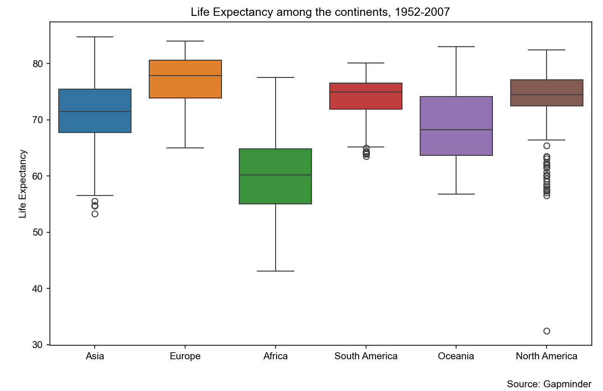
Animated Graphs
Animated graphs are a powerful way to visualize how data changes over time. In Python, one of the most commonly used tools for creating animations is Matplotlib’s FuncAnimation class. This function updates a plot frame-by-frame, allowing you to illustrate dynamic processes such as moving trends, changing patterns, or simulations. The final animation can be displayed directly in a notebook or exported as a GIF or video using writers like pillow or ffmpeg. Keep in mind that generating animations may take a few seconds, especially for longer sequences, as each frame is rendered individually.
matplotlib.animation
To implement animations, we will need to understand the concept of functions in Python. These are reusable blocks of code that perform specific tasks and can be called with different inputs to produce different outputs.
In the context of animations, a function—like update() in the code below - is used to define how each frame of the animation should be rendered based on changing input (e.g., the year). This function is then repeatedly called by FuncAnimation, allowing us to dynamically update the plot for each time step.
import pandas as pd
import matplotlib.pyplot as plt
import matplotlib.animation as animation
# Set up the figure and axis
fig, ax = plt.subplots(figsize=(8, 6))
plt.xticks(rotation=45)
# Get unique years sorted
years = sorted(gapminder['year'].unique())
def update(year_index):
ax.clear() # Clear previous frame
year = years[year_index]
yearly_data = gapminder[gapminder['year'] == year]
# Create boxplot grouped by continent
yearly_data.boxplot(column='life_exp', by='continent', ax=ax)
# Customize plot appearance
ax.set_title(f'Life Expectancy by Continent ({year})')
ax.set_xlabel('Continent')
ax.set_ylabel('Life Expectancy')
plt.suptitle('') # Remove automatic title added by Pandas boxplot
# Create animation
ani = animation.FuncAnimation(fig, update, frames=len(years), interval=800, repeat=True)
plt.tight_layout()
plt.show()
# Optional: Save as GIF (requires 'pillow')
ani.save('life_expectancy_boxplot.gif', writer='pillow')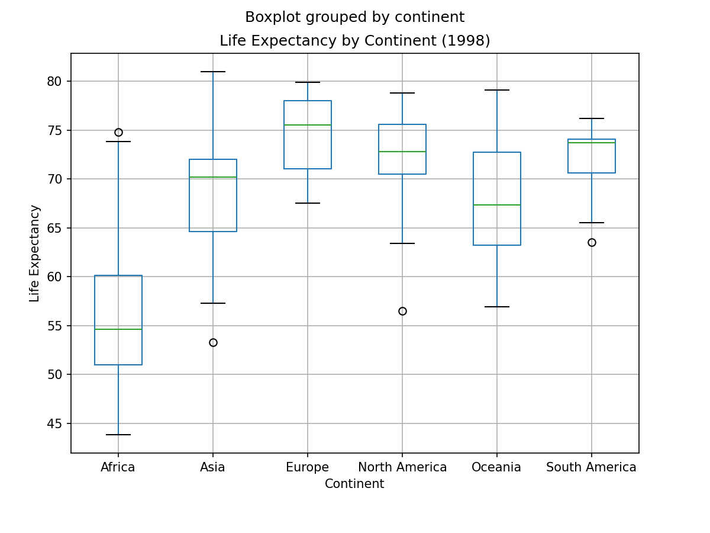
Similarly, we can create an animated visualisation showing the relationship between GDP and life expectancy over time for different countries, segmented by continent.
- X-axis (GDP): Logarithmic scale representing each country’s GDP.
- Y-axis (Life Expectancy): Life expectancy of each country’s population.
- Data Points
- Each point represents a country for a specific year.
- Colour-coded by continent:
- Asia: Red
- Europe: Blue
- Africa: Green
- Americas: Yellow
- Oceania: Purple
- Unknown: Grey
- Animation
- Displays changes over time, with each frame representing a different year.
- Title updates dynamically to reflect the current year.
# Fill NaN values in the 'continent' column with a default value
gapminder['continent'] = gapminder['continent'].fillna('Unknown')
# Set up the figure and axis
fig, ax = plt.subplots(figsize=(6, 6))
plt.xticks(rotation=45)
# Get unique years sorted
years = sorted(gapminder['year'].unique())
def update(year_index):
ax.clear() # Clear previous frame
year = years[year_index]
yearly_data = gapminder[gapminder['year'] == year]
# Ensure there are no NaN values in the data used for plotting
yearly_data = yearly_data.dropna(subset=['gdp', 'life_exp'])
# Map continents to colours, handling 'Unknown' as grey
continent_colors = yearly_data['continent'].map({
'Asia': 'red', 'Europe': 'blue', 'Africa': 'green',
'Americas': 'yellow', 'Oceania': 'purple', 'Unknown': 'grey'
}).fillna('grey') # Fill any remaining NaN values with 'grey'
# Create scatter plot
scatter = ax.scatter(yearly_data['gdp'], yearly_data['life_exp'],
c=continent_colors, alpha=0.5)
# Customize plot appearance
ax.set_title(f'Year: {year}')
ax.set_xlabel('GDP')
ax.set_ylabel('Life Expectancy')
ax.set_xscale('log') # Use logarithmic scale for GDP
ax.set_xlim(gapminder['gdp'].min(), gapminder['gdp'].max())
ax.set_ylim(gapminder['life_exp'].min(), gapminder['life_exp'].max())
# Create animation
ani = animation.FuncAnimation(fig, update, frames=len(years), interval=800, repeat=True)
plt.tight_layout()
plt.show()
# Optional: Save as GIF (requires 'pillow')
ani.save('life_expectancy_vs_gdp.gif', writer='pillow', dpi=80)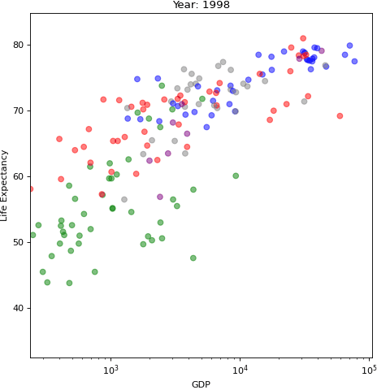
Why you should always plot your data
We have touched on the basics of python visualisations, but in this section we wanted to discuss why one should always plot the data and not just rely on tables of summary statistics.
Let us consider thirteen datasets all of which have 142 observations of (x,y) values. The table below shows the average value of X and Y, the standard deviation of X and Y, as well as the correlation coefficient between X and Y.
| id | n | mean_x | mean_y | sd_x | sd_y | correlation |
|---|---|---|---|---|---|---|
| 1 | 142 | 54.3 | 47.8 | 6.82 | 6.9 | -0.064 |
| 2 | 142 | 54.3 | 47.8 | 6.82 | 6.9 | -0.069 |
| 3 | 142 | 54.3 | 47.8 | 6.82 | 6.9 | -0.068 |
| 4 | 142 | 54.3 | 47.8 | 6.82 | 6.9 | -0.064 |
| 5 | 142 | 54.3 | 47.8 | 6.82 | 6.9 | -0.060 |
| 6 | 142 | 54.3 | 47.8 | 6.82 | 6.9 | -0.062 |
| 7 | 142 | 54.3 | 47.8 | 6.82 | 6.9 | -0.069 |
| 8 | 142 | 54.3 | 47.8 | 6.82 | 6.9 | -0.069 |
| 9 | 142 | 54.3 | 47.8 | 6.82 | 6.9 | -0.069 |
| 10 | 142 | 54.3 | 47.8 | 6.82 | 6.9 | -0.063 |
| 11 | 142 | 54.3 | 47.8 | 6.82 | 6.9 | -0.069 |
| 12 | 142 | 54.3 | 47.8 | 6.82 | 6.9 | -0.067 |
| 13 | 142 | 54.3 | 47.8 | 6.82 | 6.9 | -0.066 |
Since our datasets contain values for X and Y, we can estimate 13 regression models and plot the values for each of the 13 intercepts and slope for X.
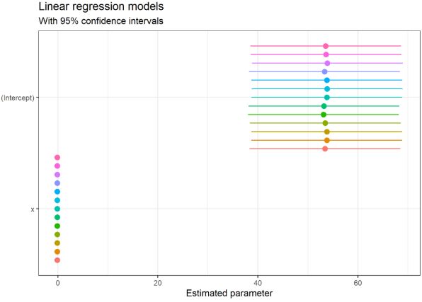
If we just looked at either the summary statistics table, or the plots of intercepts and slopes, we may be tempted to conclude that the 13 datasets are either identical or very much alike. However, this is far from the truth, as this is what the 13 individual datasets look like.
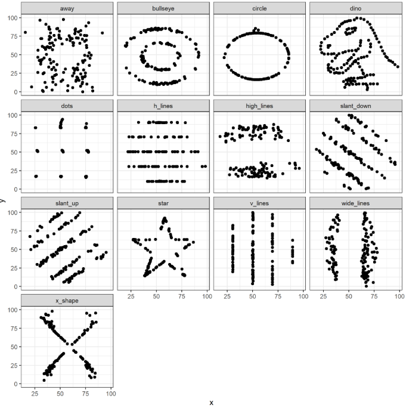
You can read more about why you should never trust summary statistics alone and should always visualize your data.